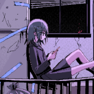

Идеальный таймер для твоего
Донатон-марафона
Мощное бесплатное приложение для стримеров: автоматическое продление времени от донатов с DonationAlerts, CloudTips, DonatePay, кастомизируемый оверлей для OBS Studio, удобное управление со смартфона и локальное API.
Всё необходимое для стримера
Создан стримером для стримеров — максимум удобства, надёжности и гибкости кастомизации.
Мульти-сервисность
Одновременное подключение DonationAlerts, CloudTips, DonatePay, Donate.Stream, DonateX и Donatty. Ни один донат не потеряется во время стрима.
CSS Генератор стилей
14 готовых пресетов (Cyberpunk, Matrix, Kawaii), шрифты Google Fonts, раздельные цвета для HH:MM:SS и эффектные анимации неонового свечения.
Управление со смартфона
Сканируйте QR-код в приложении и меняйте время, ставьте паузу или следите за топом донатеров прямо с экрана мобильного телефона.
Dok-панель для OBS
Компактная мини-панель управления, встраиваемая прямо в интерфейс OBS Studio. Больше не нужно переключаться между окнами во время игры.
Интеграция со Streamer.bot
Связывайте подписки Twitch/YouTube, баллы канала и кастомные команды с автоматическим добавлением времени к таймеру через WebSocket.
Автосохранение
Таймер автоматически сохраняет состояние при закрытии. Случайное отключение питания не сорвёт ваш многочасовой марафон.
Скриншоты приложения
Листайте скриншоты стрелками или точками. Нажмите на любой слайд для полноэкранного просмотра.
Поддерживаемые платформы
DonatonTimer непрерывно обновляется под актуальные API донатных систем.
| Платформа | Статус | Тип подключения | Особенности |
|---|---|---|---|
| DonationAlerts | ● Работает | Centrifugo v2 / Ссылка виджета | Автоматическое обновление WebSocket токена |
| CloudTips | ● Работает | API / Webhook | Мгновенное начисление времени |
| DonatePay | ● Работает | API Ключ | Поддержка уведомлений |
| Donate.Stream | ● Работает | Ключ виджета | Стабильный приём донатов |
| Donatty | ● Работает | Виджет токен | Автоматический сбор |
| DonateX | ● Работает | API | Полная интеграция |
| Streamer.bot | ● BETA | Внутренний WebSocket | Привязка любых событий стрима к времени таймера |
Поддержите развитие проекта
DonatonTimer создаётся и поддерживается бесплатно с открытым исходным кодом. Ваша поддержка помогает выпускать регулярные обновления и добавлять новые функции!
Инструкции по настройке
Подробные инструкции по подключению всех донат-сервисов, выводу оверлея в OBS и управлению с телефона.
Скачайте установочный файл DonatonTimer_v3.0.8_Setup.exe или портативную версию для Windows, либо AppImage для Linux.
- Запустите приложение. При первом открытии появится главное окно с таймером в ретро-стиле.
- Нажмите на поле времени, чтобы выставить стартовое значение (например,
01:00:00для 1 часа). - Нажмите кнопку Старт для проверки отсчёта.
В DonatonTimer v3.0.8 подключение к DonationAlerts работает через актуальный протокол Centrifugo с автообновлением токена доступа.
- Войдите в личный кабинет DonationAlerts.
- Перейдите в меню слева: Оповещения → группа Виджеты → найдите вашу вариацию оповещений.
- Нажмите «Показать ссылку для встраивания» и скопируйте её (или скопируйте токен виджета из конца ссылки).
- В приложении DonatonTimer откройте Настройки (шестерёнка) → вкладка DonationAlerts.
- Вставьте скопированную ссылку в поле «Токен или ссылка на виджет».
- Выберите домен сервиса:
donationalerts.comилиdonationalerts.ru. - Укажите курс начисления времени: например,
600 RUB = 60 мин(или 100 RUB = 10 мин). - Включите тумблер «Включить DonationAlerts» и нажмите Сохранить. Индикатор статуса станет зелёным.
Сервис безналичных чаевых и донатов CloudTips подключается через ссылку потока оповещений:
- Войдите в кабинет CloudTips.
- Перейдите в раздел «Стримерам» → подраздел «Оповещения».
- Скопируйте ссылку на поток оповещений вида:
https://stream.cloudtips.ru/n/YOUR_CHANNEL_ID. - В DonatonTimer откройте Настройки → вкладка CloudTips.
- Вставьте скопированную ссылку в поле «Ссылка на оповещения».
- Включите тумблер и нажмите Сохранить. Донаты с банковских карт и СБП будут автоматически продлевать таймер!
DonatePay подключается через персональный API-ключ пользователя:
- Войдите в аккаунт на сайте DonatePay.ru.
- Перейдите в Настройки → вкладка API (или откройте
https://donatepay.ru/page/api). - Скопируйте ваш API-ключ.
- В DonatonTimer откройте Настройки → вкладка DonatePay.
- Вставьте ключ в поле ввода, активируйте сервис и нажмите Сохранить.
Интеграция с сервисом Donate.Stream:
- Войдите в личный кабинет Donate.Stream.
- Перейдите в раздел Виджеты → Оповещения о донатах.
- Скопируйте ключ или полную ссылку на виджет оповещений.
- В DonatonTimer откройте Настройки → вкладка Donate.Stream.
- Вставьте ключ в соответствующее поле, включите тумблер и нажмите Сохранить.
Подключение виджета Donatty:
- Войдите в личный кабинет Donatty.
- В разделе виджетов скопируйте ссылку на виджет оповещений (она содержит параметры
ref=...&token=...). - В DonatonTimer перейдите в Настройки → вкладка Donatty.
- Вставьте ссылку (программа автоматически извлечёт токен) или вставьте сам токен.
- Выберите назначенный API-сервер (по умолчанию
api-014.donatty.com) и нажмите Сохранить.
DonateX использует ссылки на недавние сообщения и цель сбора средств:
- В панели DonateX откройте виджеты.
- Скопируйте ссылку на недавние сообщения (Recent URL) и сбор средств (Group URL).
- В DonatonTimer откройте Настройки → вкладка DonateX.
- Вставьте ссылки в соответствующие поля и нажмите Сохранить.
Привязывайте платные подписки, фолловы, баллы канала Twitch и YouTube к прибавлению времени:
- В программе Streamer.bot перейдите в
Servers/Clients→WebSocket Serverи включите Auto Start (по умолчанию порт8080). - В DonatonTimer откройте Настройки → вкладка Streamer.bot, укажите адрес
ws://127.0.0.1:8080/и включите сервис. - Нажмите «Добавить привязку»: выберите платформу (Twitch / YouTube), тип события (Sub, Gift Sub, Cheer, Channel Points) → задайте эквивалентную сумму в рублях.
DonatonTimer поднимает локальный веб-сервер, который отдаёт готовый прозрачный оверлей:
- В OBS Studio в списке источников сцены нажмите + и выберите Браузер (Browser Source).
- В поле URL укажите адрес:
OBS URL Оверлея
http://127.0.0.1:7575/timer - Укажите ширину и высоту (рекомендуется 600 × 180).
- Оверлей сразу отобразит красивый таймер со стилями, настроенными в CSS генераторе!
Управляйте таймером прямо из окна OBS без необходимости сворачивать игру или стрим:
- В верхнем меню OBS Studio выберите Вид → Dok-панели → Пользовательские dok-панели браузера.
- В столбце «Имя» введите, например:
Донатон Таймер. - В столбце «URL-адрес» введите:
URL Dok-панели
http://127.0.0.1:7575/mini - Нажмите Применить. Появится компактная панель, которую можно закрепить в любом месте окна OBS.
Контролируйте таймер, отойдя от компьютера или прямо с дивана:
- Убедитесь, что смартфон и компьютер подключены к одной Wi-Fi сети.
- В DonatonTimer нажмите кнопку QR-код на панели управления.
- Наведите камеру смартфона на QR-код и откройте ссылку.
- В браузере откроется мобильная веб-панель со всеми кнопками управления и топом донатеров в реальном времени.
-
❓ В OBS горит чёрный экран или ошибка соединения:
Убедитесь, что приложение DonatonTimer запущено. Проверьте в журнале приложения, не был ли занят порт7575. Если порт был занят, приложение автоматически пробует7576. -
❓ Донаты приходят в DonationAlerts, но таймер не прибавляется:
Проверьте статус подключения во вкладке DonationAlerts. Если статус красный, обновите ссылку виджета оповещений и проверьте, указан ли правильный курс конвертации рублей в минуты. -
❓ Телефон не открывает панель по QR-коду:
Проверьте брандмауэр Windows (Windows Firewall) — при первом запуске разрешите приложению доступ к частным сетям (Private Networks). Телефон и ПК должны находиться в одной локальной подсети.
Документация локального API
Создавайте собственные HTML-виджеты для OBS, внешние контроллеры или чат-боты, общаясь с таймером по WebSocket.
DonatonTimer поднимает два локальных сервиса:
| Адрес | Тип | Назначение |
|---|---|---|
http://127.0.0.1:7575/timer |
HTTP | Готовая страница таймера со стилями из приложения |
http://127.0.0.1:7575/dashboard |
HTTP | Полнофункциональная панель управления и статистика |
http://127.0.0.1:7575/mini |
HTTP | Компактная мини-панель для dok-панели OBS |
ws://127.0.0.1:3434/ |
WebSocket | Двусторонний обмен данными, статус таймера и команды |
/ (не /ws).
Сервер транслирует два типа сообщений всем подключённым WebSocket клиентам:
1. Обновление времени: update_timer
Отправляется каждую секунду при активном отсчёте, а также сразу при паузе, запуске или добавлении времени:
{
"action": "update_timer",
"duration": 3661
}duration — общее количество оставшихся секунд (целое неотрицательное число). Например, 3661 соответствует 01:01:01.
2. Статистика донатов: update_donations
Отправляется при поступлении новых донатов и при первом подключении клиента:
{
"action": "update_donations",
"recentDonations": [
{ "username": "Viewer1", "minutesAdded": 15 },
{ "username": "Viewer2", "minutesAdded": 5 }
],
"topDonators": {
"Viewer1": 45,
"Viewer2": 20
}
}Для управления таймером отправляйте JSON-сообщения в открытый WebSocket:
| Команда (JSON) | Описание действия |
|---|---|
{"action": "start"} |
Запустить отсчёт таймера (если остаток времени > 0) |
{"action": "stop"} |
Приостановить таймер (пауза) |
{"action": "change_time", "seconds": 300} |
Добавить 5 минут (+300 секунд) к остатку времени |
{"action": "change_time", "seconds": -60} |
Вычесть 1 минуту (-60 секунд) из остатка времени |
const socket = new WebSocket('ws://127.0.0.1:3434/');
socket.onopen = () => {
// Добавить 10 минут (600 секунд)
socket.send(JSON.stringify({
action: 'change_time',
seconds: 600
}));
};Вы можете сохранить данный код в файл widget.html на своём компьютере, отредактировать под свой стрим и добавить в OBS как Локальный файл источника «Браузер»:
<!doctype html>
<html lang="ru">
<head>
<meta charset="utf-8">
<meta name="viewport" content="width=device-width,initial-scale=1">
<title>Кастомный виджет DonatonTimer</title>
<style>
html, body { margin: 0; background: transparent; overflow: hidden; }
body { font-family: "Segoe UI", Arial, sans-serif; color: #fff; }
#timer {
display: inline-block;
padding: 14px 24px;
border-radius: 16px;
background: rgba(15, 18, 28, 0.85);
border: 2px solid #8b5cf6;
font-size: 68px;
font-weight: 700;
font-variant-numeric: tabular-nums;
line-height: 1;
text-shadow: 0 0 20px rgba(139, 92, 246, 0.6);
}
#status { margin: 6px 12px; font-size: 13px; color: #94a3b8; }
html[data-connected="false"] #timer { opacity: 0.5; border-color: #ef4444; }
</style>
</head>
<body>
<div id="timer">--:--:--</div>
<div id="status">Подключение…</div>
<script>
const WS_URL = 'ws://127.0.0.1:3434/';
const timer = document.getElementById('timer');
const status = document.getElementById('status');
let socket;
let retry;
function formatTime(total) {
const hours = Math.floor(total / 3600);
const minutes = Math.floor(total / 60) % 60;
const seconds = total % 60;
return [hours, minutes, seconds]
.map(v => String(v).padStart(2, '0'))
.join(':');
}
function connect() {
socket = new WebSocket(WS_URL);
socket.onopen = () => {
document.documentElement.dataset.connected = 'true';
status.textContent = '';
};
socket.onmessage = (event) => {
try {
const msg = JSON.parse(event.data);
if (msg && msg.action === 'update_timer' && typeof msg.duration === 'number') {
timer.textContent = formatTime(msg.duration);
}
} catch (e) {}
};
socket.onclose = () => {
document.documentElement.dataset.connected = 'false';
status.textContent = 'Потеря связи — переподключение…';
clearTimeout(retry);
retry = setTimeout(connect, 1500);
};
socket.onerror = () => socket.close();
}
connect();
</script>
</body>
</html>Контрибьюторы проекта
DonatonTimer создаётся и развивается благодаря сообществу. Огромная благодарность всем, кто вносит свой вклад!

MjKey
Создатель проектаАрхитектура приложения на Flutter, адаптеры сервисов донатов, локальный веб-сервер, генератор CSS-стилей, инсталлятор Inno Setup и CI/CD релизов для Windows и Linux.
@MjKey на GitHubDertosh
Core ContributorРеализация протокола Centrifugo v2 для DonationAlerts с автополучением токенов, автоматические тесты, документация по локальному API таймера и эталонный виджет для OBS.
@Dertosh на GitHubamiyadin
Core ContributorРазработка классического стиля интерфейса v2 (Material Design), полноценная поддержка тем оформления (Dark/Light) и компонентные тесты интерфейса.
@amiyadin на GitHubКак внести свой вклад?
Мы всегда рады новым идеям, исправлению ошибок и улучшению таймера! Любой желающий может принять участие в разработке:
- Сделайте Fork репозитория MjKey/DonatonTimer на GitHub.
- Клонируйте проект и установите зависимости:
Bash
git clone https://github.com/ВАШ_НИК/DonatonTimer.git cd DonatonTimer flutter pub get - Создайте отдельную ветку для ваших изменений:
git checkout -b feature/awesome-feature. - Проверьте, что тесты проходят:
flutter test. - Отправьте изменения и создайте Pull Request в ветку
main!